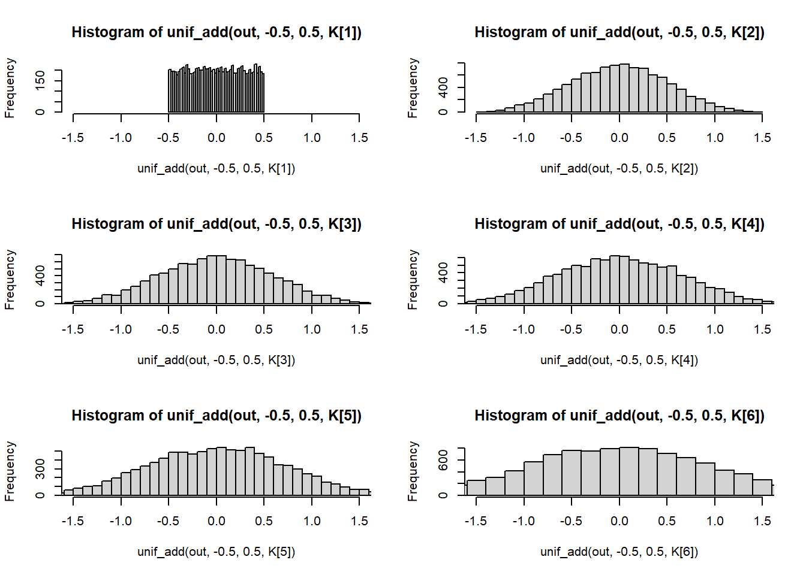
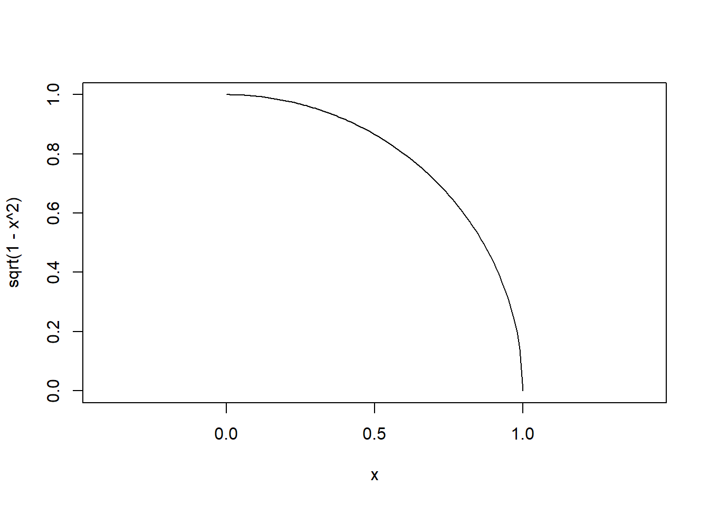
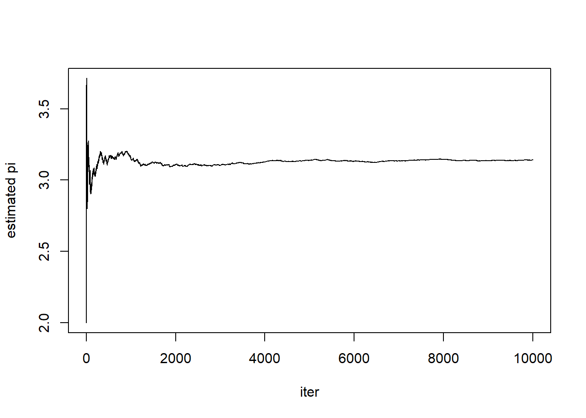
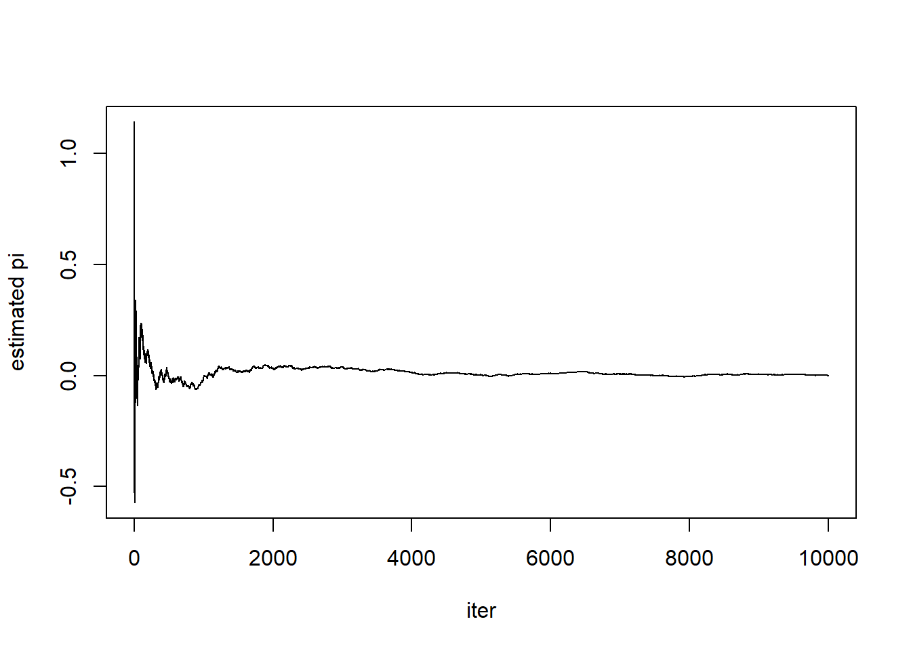
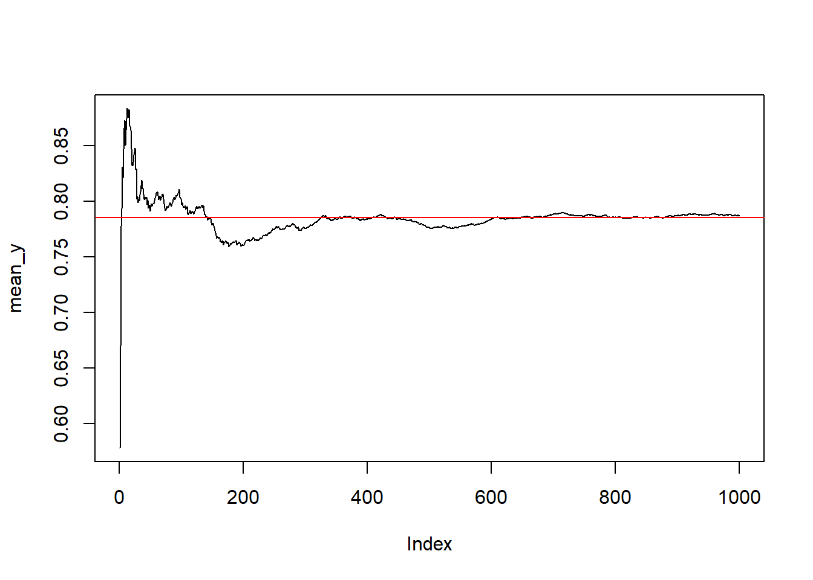
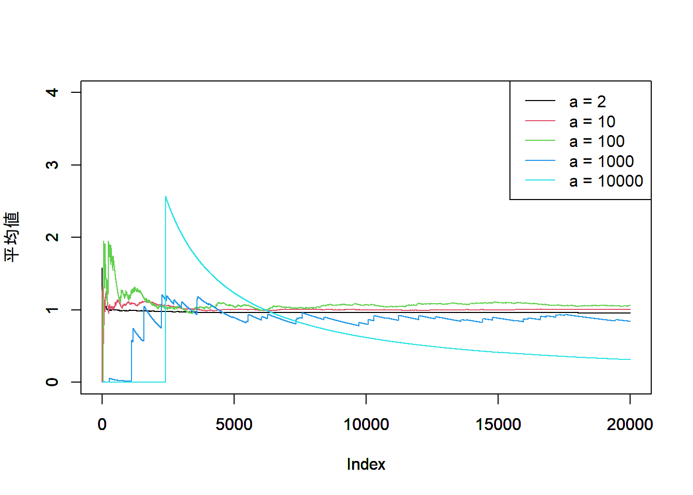

gaussian_func <- function(x){
out <- exp(-x^2)
return(out)
}
x <- seq(-4, 4, length.out = 100)
x_gauss <- gaussian_func(x)
plot(x, x_gauss, type="l", ylim = c(0, 1.2))chp02
Chapter 02 そもそもモンテカルロ法とは
1章は本のモチベーションのお話でコードがなく、内容も短いので読もう。
モンテカルロ法というのは乱数を用いた数値計算手法の総称らしい。
計算時間を長くすれば正しい答えにいくらでも近づけることが保証されている方法を指しがち。
MCMCのうちの後ろのMC(シンプルなモンテカルロ法)を考えよう。
そもそも乱数とは
乱数とは確率 P(x) に従って得られる数字の列
一様乱数
区間 [a, b] の間に存在する実数を等確率で与える乱数を一様乱数という。
どのように実装するかちょっと考えるので一旦飛ばす。
ガウス乱数(正規乱数)
ガウス関数はハミルトニアン・モンテカルロ法の導入に必要不可欠な考え方なのでなんとなく覚えておこう。ガウス関数の定義は以下。
f(x) = \exp(-x^2)
これをRで描画してみると、本の図2.1と同じ結果が現れる。
これを積分値が1になるように正規化することで、xの確率分布と理解できそう。
P(x) = \frac{\exp(-x^2)}{\sqrt{\pi}}
さらに分布の中心が0でなくても良いように\sigmaを導入すると、
P_{\sigma}(x) = \frac{\exp(\frac{-(x-\mu)^2}{2\sigma^2})}{\sqrt{2\pi\sigma}} \\ = \frac{1}{\sqrt{2\pi\sigma}}\exp(-\frac{(x-\mu)^2}{2\sigma^2})
という形になり、統計学の本で割とシンプルに出会える乱数に見える。
baseのplotでやるとこんな感じか。確かに図2.2に近い。
gaussian_rnd <- function(x, mu, sigma){
out <- 1/sqrt(2*pi*sigma) * exp(-(x-mu)^2/(2*sigma^2))
return(out)
}
x <- seq(-10, 10, length.out = 100)
df <- data.frame(
x = x,
p_x_1 = gaussian_rnd(x, mu = 0, sigma = 1),
p_x_2 = gaussian_rnd(x, mu = 0, sigma = 2),
p_x_4 = gaussian_rnd(x, mu = 0, sigma = 4)
)
ylim <- c(0, 0.45)
xlim <- c(-10,10)
ylab <- "P(x)"
plot(df$x, df$p_x_1, type = "l",
ylim = ylim, xlim = xlim, col = "red", ylab = ylab)
par(new=T)
plot(df$x, df$p_x_2, type = "l",
ylim = ylim, xlim = xlim, col = "blue", ylab = ylab)
par(new=T)
plot(df$x, df$p_x_4, type = "l",
ylim = ylim, xlim = xlim, col = "green", ylab = ylab)
legend("topright", legend = c("sig = 1", "sig = 2", "sig = 4"),
col = c("red", "blue", "green"),
lty = c(1,1,1)
)中心極限定理というのがある。何らかの測定には何らか誤差がつきものなので、測定の誤差の要因がK種類あり、それぞれが独立にランダムな誤差を与えるような状況を考える。
このとき、測定結果は、この種類の乱数を足した分だけ、真の値からはずれる(誤差)。
Kが十分に大きければ、誤差はガウス乱数になる。実験をしてみる。
図2.3の完全再現とはいかなかったが、言いたいことはなんとなく伝わってきたのでヨシ！
out <- 10000
K <- c(1, 2, 3, 4, 5, 10)
x <- seq(-1.5, 1.5, length.out = out)
axis_x <- data.frame(
axis1 = x / sqrt(K[1]),
axis2 = x / sqrt(K[2]),
axis3 = x / sqrt(K[3]),
axis4 = x / sqrt(K[4]),
axis5 = x / sqrt(K[5]),
axis100 = x / sqrt(K[6])
)
# ガウス乱数の設定
s <- sqrt(K)
# 描画の設定
xlim <- c(-1.5, 1.5)
#
unif_add <- function(x, a, b, K){
out <- runif(x, min = a, max = b)
if(K == 1){
return(out)
}else{
for(i in 1:K){
set.seed(i+K)
out <- out + runif(x, min = a, max = b)
}
return(out)
}
}
par(mfrow = c(3, 2))
hist(unif_add(out, -0.5, 0.5, K[1]), xlim = xlim, breaks = 40)
hist(unif_add(out, -0.5, 0.5, K[2]), xlim = xlim, breaks = 40)
hist(unif_add(out, -0.5, 0.5, K[3]), xlim = xlim, breaks = 40)
hist(unif_add(out, -0.5, 0.5, K[4]), xlim = xlim, breaks = 40)
hist(unif_add(out, -0.5, 0.5, K[5]), xlim = xlim, breaks = 40)
hist(unif_add(out, -0.5, 0.5, K[6]), xlim = xlim, breaks = 40)
乱数と疑似乱数の違い
現実問題、コンピュータに確率的操作を行うことは大変なので、疑似乱数を生成することでどうにかしている。擬似乱数はアルゴリズムに従って生成されて、見かけ上ほとんどが乱数に見える。
その典型的な実装として、線形合同法を取り上げる。
適切な自然数a、b、Mに対して、
x_{n+1} = ax_n + b(mod M)
という漸化式を考える。\mod Mは、Mで割った余りを意味する。
初項となる0\leq x_0 \leq M-1、 x_0は整数をいい感じに決めると、この漸化式に従って、乱数っぽい数列を作ることができる。初項が同じなら、漸化式に従って必ず同じ数列が生成されるため、厳密には周期性がある。「ほとんど乱数に見える列」であり、分布二偏りが生まれうることには注意したほうが良い。
大規模な乱数生成が必要となる計算をする場合は、短い周期性を持つ擬似乱数生成アルゴリズムは望ましくない。(線形合同法の周期は2^{31}-1らしい)。
加えてシード値の設定を見することで同じ乱数列を多く作ってしまうこともある。
実用的な疑似乱数アルゴリズム(メルセンヌツイスタなど)は、こうした問題が生じない工夫がなされている。
一様乱数を用いた積分
一様乱数を用いた円周率の計算
半径1の、1/4の円の面積を求める事を考える。
面積は\pi/4と考えられる。これは算数。
ということは、4倍すれば円周率が求められるということ。
半径1の円の方程式を思い出すと、x^2 + y^2 = 1
xとyはそれぞれ適当な乱数と考える。
これらの乱数が、円の内側に落ちた回数を数えることで、
「点が円の内側に落ちる『確率』」は\pi/4に近くなるはず。
curve(sqrt(1-x^2), xlim = c(0, 1), ylim = c(0, 1), asp=1)
n_iter <- 10000
set.seed(42)
n_in <- 0.5
pi_est <- numeric()
for(i in 1:(n_iter+1)){
x <- runif(1)
y <- runif(1)
if(x^2 + y^2 < 1){
n_in <- n_in + 1
}
pi_est[i] <-4 * n_in / i
}
# シンプルな結果の記述
plot(c(1:(n_iter+1)), pi_est, type="l", xlab = "iter", ylab = "estimated pi")
print(tail(pi_est))[1] 3.141857 3.141943 3.142028 3.142114 3.141800 3.141886# 誤差を出す
err <- pi - pi_est
plot(c(1:(n_iter+1)),err, type="l", xlab = "iter", ylab = "estimated pi")
print(head(err))[1] 1.1415927 0.1415927 -0.1917407 -0.3584073 -0.4584073 -0.5250740print(tail(err))[1] -0.0002640891 -0.0003499292 -0.0004357521 -0.0005215578 -0.0002073464
[6] -0.0002931578一様乱数を用いた定積分
y=f(x)の定積分\int_{a}^bf(x)dxを考えていく。(リーマン積分の)定義に従えば、関数をx軸基準で短冊型に切り、
長方形の形で近似することで求める。より厳密にはこの切幅を限りなく小さくしていくことで、積分を可能にする。
xを、区間[a,b]の一様乱数とする。乱数を1つ選んでf(x)を選ぶと、値が返される。
これをK個の乱数で作っていくと、区間[a,b]に点がまんべんなく広がる。
このときの平均値 E(f(x)) = \frac{1}{K}\Sigma_{k=1}^K f(x^{(k)})は、知られている通り以下。
\frac{1}{b-a}\int_a^bdxf(x)
Kを十分大きくすれば、これは実質積分値。f(x)=\sqrt{1-x^2} を例にすれば、
これは\frac{\pi}{4}に近くなる。
myfunc <- function(x){
y <- sqrt((1-x^2))
return(y)
}
print(paste0("pi/4 is: ", pi/4))[1] "pi/4 is: 0.785398163397448"set.seed(2022)
n_iter <- 1000
sum_y <- 0
mean_y <- numeric()
for(i in 1:n_iter){
x <- runif(1)
y <- myfunc(x)
sum_y <- sum_y + y
mean_y[i] <- sum_y/i
}
plot(mean_y, type = "l")
par(new=T)
abline(h=pi/4, col="red")
ガウス積分～重点サンプリングが必要になる例
ガウス関数を積分することを考える。以下は正規化定数のために\frac{1}{\sqrt{2\pi}}が入っている。
\frac{1}{\sqrt{2\pi}}\exp{-(\frac{x^2}{2})}
上記の一様乱数を用いた積分計算を行う事を考えるため、区間[-a, a]での一様分布を考える。
期待値の計算から、以下のように面積が計算される、ハズ。
\int_{-a}^{a}dx \frac{1}{\sqrt{2\pi}} \exp{(-\frac{x^2}{2})}
やってみると、あんまり良く収束しない。(らしい)(未完)
簡単に言うと、一様乱数のサンプリングで行うMCMCの積分計算は、
99.9%ほど、あまり意味のない点に基づいた計算に費やされていて、効率があまり良くないのだとか。
実装をしてみるとたしかに効率が悪そうに見える。
gauss_func <- function(x){
y <- 1/sqrt(2*pi) * exp(-(x^2)/2)
return(y)
}
a <- c(2, 10, 100, 1000, 10000)
n_iter <- 20000
sum_y <- 0
mean_y <- matrix(rep(0, n_iter * length(a)), nrow=n_iter, ncol=length(a))
set.seed(200)
for(a_ in a){
for(i in 1:n_iter){
x <- runif(1, min = -a_, max=a_)
y <- gauss_func(x)
sum_y <- sum_y + y
j <- which(a==a_)
mean_y[i, j] <- 2 * a_ * sum_y/i
}
sum_y <- 0
}
plot(mean_y[,1], type = "l", col = 1, ylim = c(0, 4),
ylab = "平均値")
par(new = T)
plot(mean_y[,2], type = "l", col = 2, ylim = c(0, 4),
ylab = "")
par(new = T)
plot(mean_y[,3], type = "l", col = 3, ylim = c(0, 4),
ylab = "")
par(new = T)
plot(mean_y[,4], type = "l", col = 4, ylim = c(0, 4),
ylab = "")
par(new = T)
plot(mean_y[,5], type = "l", col = 5, ylim = c(0, 4),
ylab = "")
legend("topright", legend = paste0("a = ", a),
col = c(1:5),
lty = c(1,1,1,1,1)
)